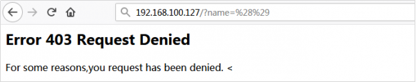
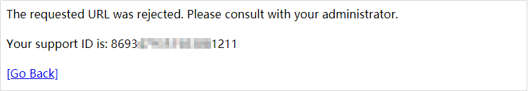
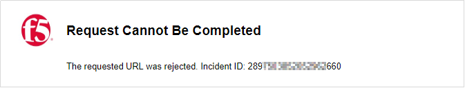
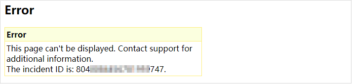
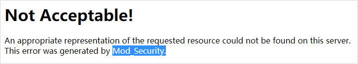
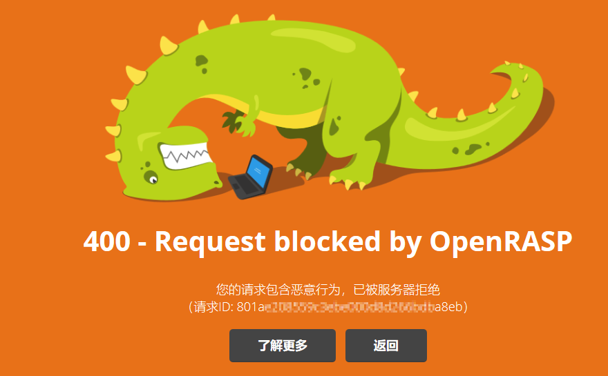
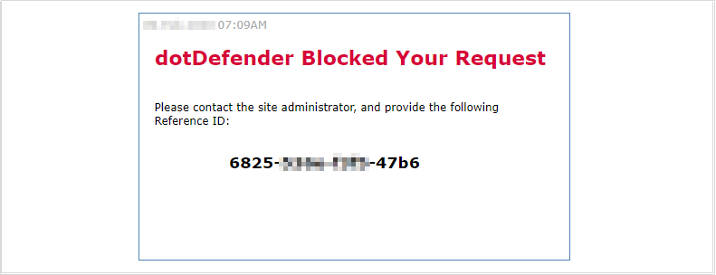

信息打点
#知识点 |
判断系统：
更改大小写，访问正常可能为Windows；访问不一样可能为Linux（判定结果不一定百分百正确）
不要在参数后面加（？后的），要在文件上加（例如：index.phP）
不实用TTL值判定主机的操作系统
操作系统 TTL Windows NT/2000 128 Windows 95/98 32 Unix 255 Linux 64 Windows 7 64 但是当用户修改了TTL值的时候，就会误导我们的判断
修改本机电脑上面的默认TTL值
TTL值在注册表的位置是：HKEY_LOCAL_MACHINE\SYSTEM\CurrentControlSet\Services\Tcpip\Parameters
其中有个DefaultTTL的DWORD值，其数据就是默认的TTL值了，我们可以修改DefaultTTL里面的TTL默认值，但不能大于十进制的255。
信息搜集
-
开发注释
-
无法查看源代码（禁用JS或者Ctrl+U或者在网页url前面加view-source:）
-
抓包、看包
-
robots协议：/robots.txt
Robots协议（也称爬虫协议，机器人协议等）的全称是“网络爬虫排除协议”，网站通过Robots协议告诉搜索引擎哪些页面可以抓取，哪些页面不能抓取。
-
phps源码：/index.phps
phps文件就是php的源代码文件，通常用于提供给用户（访问者）直接通过Web浏览器查看php代码的内容。
因为用户无法直接通过Web浏览器“看到”php文件的内容，所以需要用phps文件代替。
-
源码泄露：/www.zip /www.tar.gz
-
Git源码泄露：/.git/index.php /.git/index
漏洞利用工具：GitHack
github项目地址：https://github.com/lijiejie/GitHack
用法示例：
GitHack.py http://www.openssl.org/.git/
修复建议：删除.git目录或者修改中间件配置进行对.git隐藏文件夹的访问。
-
SVN泄露：/.svn/entries
使用svn checkout后，项目目录下会生成隐藏的.svn文件夹（Linux上用ls命令看不到，要用ls -al命令）。
svn1.6及以前版本会在项目的每个文件夹下都生成一个.svn文件夹，里面包含了所有文件的备份
svn1.7及以后版本则只在项目根目录生成一个.svn文件夹，里面的pristine文件夹里包含了整个项目的所有文件备份
github项目地址：https://github.com/callmefeifei/SvnHack
-
备份文件：
-
/index.php.swpb
-
/index.php.bak
-
/backup.sql
-
.old
-
.temp
vim中的swp即swap文件，在编辑文件时产生，它是隐藏文件。这个文件是一个临时交换文件，用来备份缓冲区中的内容。如果原文件名是data，那么swp文件名就是.data.swp。如果文件正常退出，则此文件自动删除。需要注意的是如果你并没有对文件进行修改，而只是读取文件，是不会产生swp文件的。
漏洞利用：直接访问.swp文件，下载回来后删掉末尾的.swp，获得源码文件。
-
-
cookie泄露
-
域名解析
A 记录：
最基本的记录类型，也称为地址记录，为域名或子域名提供 IPv4 地址。该记录将域名指向 IP 地址。
AAAA 记录：
将主机名映射到 128 位 IPv6 地址。长期以来，32位IPv4地址用于识别互联网上的计算机。但由于IPv4的短缺，IPv6被创建。四个“A”（AAAA）是助记符，表示IPv6比IPv4大四倍。
CNAME 记录：
也称为规范名称记录，创建一个域名的别名。别名域或子域获取原始域的所有 DNS 记录，通常用于将子域与现有主域相关联。
MX 记录：
也称为邮件交换记录，告知哪些邮件交换服务器负责将电子邮件路由到正确的目标或邮件服务器。
NS 记录：
也称为名称服务器记录，指向有权管理和发布该域的 DNS 记录的名称服务器。这些 DNS 服务器在处理与该域相关的任何查询方面具有权威性。
PTR 记录：
也称为指针记录，将 IPv4 或 IPv6 地址指向其计算机的主机名。它通过将 IP 地址指向服务器的主机名来提供反向 DNS 记录或 rDNS 记录。
SRV 记录：
也称为服务记录，指示域运行的特定服务和端口号。可扩展消息传递和状态协议 （XMPP） 和会话初始协议 （SIP） 等互联网协议通常需要 SRV 记录。
SOA 记录：
也称为授权机构起始记录，提供有关域的基本信息，例如标识域权威名称服务器的主节点、域管理员的电子邮件、DNS 区域的序列号等。
TXT 记录：
允许网站管理员在 DNS 记录中插入任意文本。
CAA 记录：
也称为证书颁发机构授权记录，反映了有关为域颁发数字证书的公共策略。如果您的域不存在 CAA 记录，则任何证书颁发机构都可以颁发 SSL 证书。但是，使用此记录，您可以限制哪个 CA 有权为您的域颁发数字凭据。
DS 记录：
也称为委派签名者记录，由公钥的唯一字符及其相关元数据（如密钥标记、算法、摘要类型和称为摘要的加密哈希值）组成。
DNSKEY 记录：
也称为 DNS 密钥记录，包含公共签名密钥，如区域签名密钥 （ZSK） 和密钥签名密钥 （KSK）。DS 和 DNSKEY 记录验证 DNS 服务器返回的 DNS 记录的真实性。
-
有的会有技术文档泄露信息
-
php探针：/tz.php
-
mdb文件：/db/db.mdb
mdb文件是早期asp+access架构的数据库文件 直接查看url路径添加/db/db.mdb下载文件
-
Java源码泄露：WEB-INF/web.xml和/WEB-INF/classes/泄露
WEB-INF是Java的WEB应用的安全目录，如果想在页面中直接访问其中的文件，必须通过web.xml文件对要访问的文件进行相应映射才能访问。WEB-INF主要包含一下文件或目录：WEB-INF/web.xml : Web应用程序配置文件, 描述了servlet和其他的应用组件配置及命名规则.
WEB-INF/database.properties : 数据库配置文件
WEB-INF/classes/ : 一般用来存放Java类文件(.class)
WEB-INF/lib/ : 用来存放打包好的库(.jar)，放置仅在这个应用中要求使用的jar文件，如数据库驱动jar文件
WEB-INF/src/ : 用来放源代码(.asp和.php等)通过找到 web.xml 文件，推断 class 文件的路径，最后直接 class 文件，再通过反编译 class 文件，得到网站源码。
-
御剑扫目录
-
DS_Store文件泄露
.DS_Store是Mac下Finder用来保存如何展示 文件/文件夹 的数据文件，每个文件夹下对应一个。如果将.DS_Store上传部署到服务器，可能造成文件目录结构泄漏，特别是备份文件、源代码文件。
漏洞利用工具：
github项目地址：https://github.com/lijiejie/ds_store_exp
用法示例：
ds_store_exp.py http://hd.zj.qq.com/themes/galaxyw/.DS_Store
-
GitHub源码泄露
https://github.com/search?q=smtp+user+@qq.com&type=code
-
Composer.json泄露
（PHP特性）
-
hg源码泄露Mercurial 是一种轻量级分布式版本控制系统，使用
hg init的时候会生成.hg。漏洞利用工具：dvcs-ripper
github项目地址：https://github.com/kost/dvcs-ripper
用法示例：
rip-hg.pl -v -u http://www.example.com/.hg/
-
CVS泄露CVS是一个C/S系统，多个开发人员通过一个中心版本控制系统来记录文件版本，从而达到保证文件同步的目的。主要是针对 CVS/Root以及CVS/Entries目录，直接就可以看到泄露的信息。
http://url/CVS/Root 返回根信息
http://url/CVS/Entries 返回所有文件的结构漏洞利用工具：dvcs-ripper
github项目地址：https://github.com/kost/dvcs-ripper.git
运行示例：
rip-cvs.pl -v -u http://www.example.com/CVS/
-
Bazaar/bzr泄露bzr也是个版本控制工具, 虽然不是很热门, 但它也是多平台支持, 并且有不错的图形界面。
运行示例：
rip-bzr.pl -v -u http://www.example.com/.bzr/
端口
常见的端口以及入侵方式

攻击方向
21(FTP)
默认端口：20（数据端口）；21（控制端口）；69（tftp小型文件传输协议）
爆破：
#anonymous匿名登陆 |
嗅探：
Ettercap(内网神器)
SRE实战 互联网时代守护先锋，助力企业售后服务体系运筹帷幄！一键直达领取阿里云限量特价优惠。
或msf模块
use auxiliary/sniffer/psnuffle |
后门：
在特定版本的vsftpd服务器中，被人恶意植入代码，当用户名以”😃”为结尾
服务器就会在6200端口监听，并且能够执行任意代码(root)
use exploit/unix/ftp/vsftpd_234_backdoor |
22(SSH)
爆破：
#可以采用上边那种或以下这种写法 |
53(DNS)
内网使用Ettercap进行DNS劫持，钓鱼攻击
公网的话要能控制运营商网关
139(Smb)
爆破：
hydra -l root -P top10000.txt 192.168.115.136 smb -v |
远程代码执行：
443(https)
检测：
nmap -sV -p 8443 --script ssl-heartbleed 192.168.115.136 |
利用：
use auxiliary/scanner/ssl/openssl_heartbleed |
873(Rsync)
未授权访问：
rsync -avz ip::wwwroot/目录 /root/ #下载目标主机上的文件到本机root目录 |
2049(NFS)
列出导出文件夹：
use auxiliary/scanner/nfs/nfsmount |
6379(Redis)
未授权访问：
#没有密码，直接连接 |
7001/7002(weblogic)
反序列化：CVE-2017-3248
WAF识别
本文转载自微信公众号：**潇湘信安。**已获得原作者授权，转载请注明出处
原文链接：https://mp.weixin.qq.com/s/3uUZKryCufQ_HcuMc8ZgQQ
D盾

云锁
WAF

云锁防火墙

UPUPW安全防护

宝塔网站防火墙

网防G01

护卫神

网站安全狗

智创防火墙

360主机卫士或360webscan

西数WTS-WAF

Naxsi WAF

腾讯云

腾讯宙斯盾

百度云

华为云

网宿云

创宇盾

玄武盾


阿里云盾

360网站卫士

奇安信网站卫士

安域云WAF

铱讯WAF

长亭SafeLine

长亭雷池

安恒明御WAF

F5 BIG-IP



Mod_Security

OpenRASP

dotDefender

红网云WAF

云网盾

负载均衡识别
分为两大类：
- 广域网负载均衡
他的原理就是DNS，简单的方法就是使用DNS轮询来进行负载均衡。当你访问一个域名时，同一个域名会被解析成多个A记录解析到多个ip地址上。 - 服务器负载均衡
基于web的服务，经常使用的是nginx、apache这种应用层的负载均衡。
当然也可以使用一些负载均衡设备去实现。
识别工具：kali上的ldb
ldb www.baidu.com |
==※==基本上大站去扫描的话，他们要么是广域网的要么是服务器的负载均衡，即使扫描到同一个域名只解析到一个ip地址，这个地址对应的设备也基本是负载均衡设备，而不是他真实的服务器
防火墙识别
nmap
aFa攻防实验室防火墙识别（用处不大）
APP&小程序
- AppInfoScanner：内在提取资产
- 资源提取：比如涉及到的图片、配置性文件
- Xposed&JustTrustMe：解决加壳、有检测的防抓包、防调试的APP上的数据抓取
小程序源码获取
目录↓
/data/data/com.tencent.mm/MicroMsg/{{一串32位的16进制字符串名文件夹}}/appbrand/pkg/ |
有xxxxx.wxapkg类型的文件
想要进入到上面这个目录，需要使用到第三方的文件管理器，且安卓需要取得root权限
GitHub项目：wxappUnpacker
进入脚本目录后
npm install esprima |
node wuWxapkg.js [-d] <files...> //files 就是你想要反编译的文件名，注意路径是反斜杠\ |
在微信开发者工具新增项目即可打开
如果运行出现了点问题，可以试试点击开发者工具 详情 去掉 es6转es5 的勾，勾上不校验安全域名
勾选了还是无法运行？那么请在详情里把基础版本库调低至1.8左右，再试试
出现找不到某些文件的情况怎么办？我只能告诉：删！删！删！app.json里面,提示找不到那个文件，就将pages下注册的该页面语句暂时删除掉。删到可以运行为止